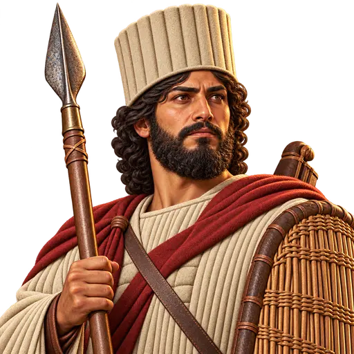
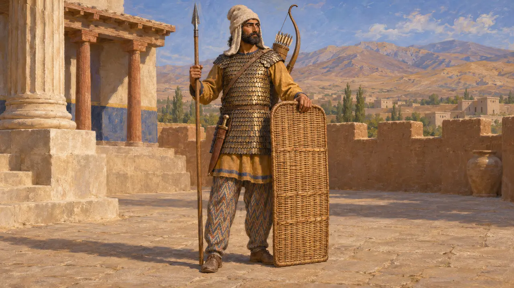
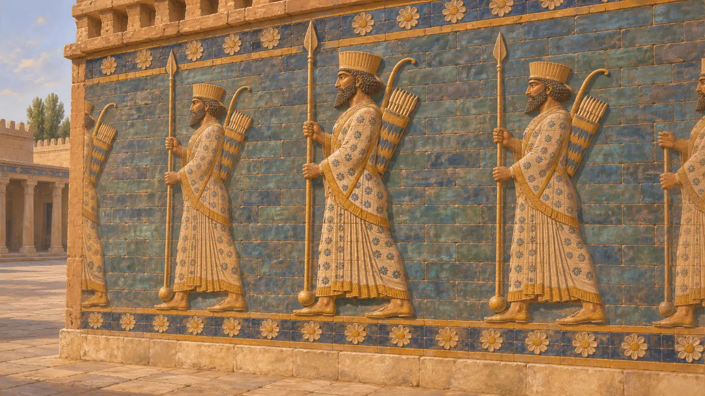
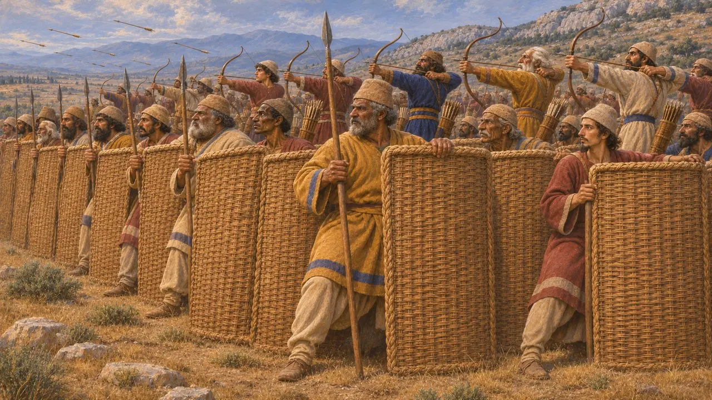
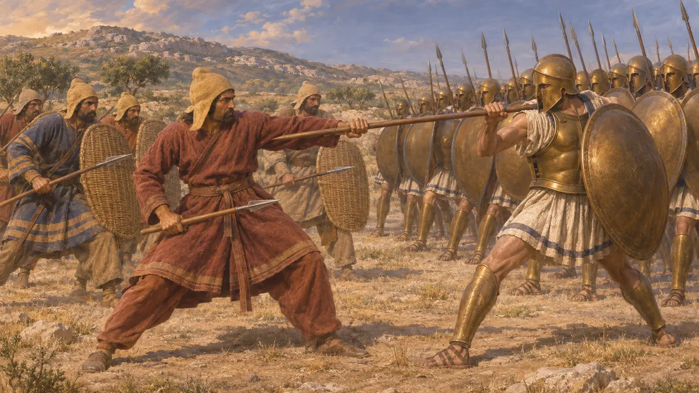
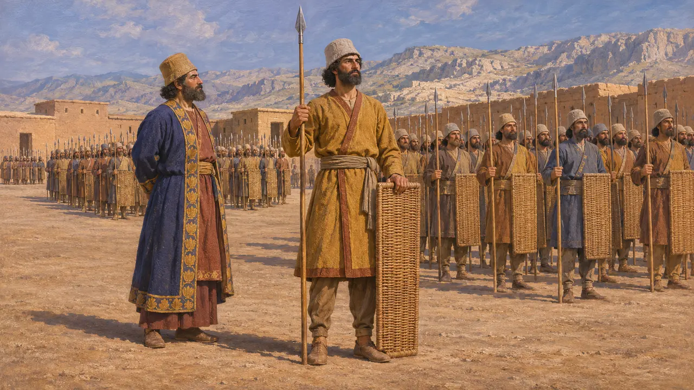

رمّاح فارسي
جندي مشاة في جيش الملك الهخامنشي، نحو 550-479 ق.م
حمل الجندي الفارسي الراجل رمحًا وترسًا من الخوص وقوسًا في أحيان كثيرة، وشكّل نواة الجيوش التي فتحت الإمبراطورية لقورش وقمبيز وداريوس. ويصوّره الفن الفارسي حارسًا للملك، بينما يصف الكتّاب اليونانيون كيف كان يقاتل وكيف كان حاله في مواجهة المشاة اليونانيين الثقال في ثرموبيلاي وبلاتيا.
في اللعبة: تجعل اللعبة الرمّاح الفارسي وحدة تروس تصدّ الغزاة والخيّالة، وتوقف معظم السهام، وهي أبطأ من أن تطارد. وتاريخيًا حمل كثير من المشاة الفرس أقواسًا أيضًا، فكان الرمح والقوس في الغالب بيد الرجل نفسه.

السلاح واللباس عند هيرودوت
رواية قديمةيذكر هيرودوت، في تعداده لجيش خشايارشا، أن الفرس كانوا يلبسون قلانس لينة من اللبّاد وأقمصة ذات أكمام ودروعًا حرشفية وسراويل. وكانوا يحملون تروسًا من الخوص ورماحًا قصيرة وأقواسًا كبيرة بسهام من القصب، وخناجر معلّقة عند الفخذ اليمنى. وفي موضع آخر يجعل أريستاغوراس يقول للإسبرطيين إن الفرس يقاتلون بالأقواس والرماح القصيرة وهم في السراويل والعمائم، حجةً على أن هزيمتهم يسيرة.
Herodotus 7.61; Herodotus 5.49

الرمّاح في الفن الفارسي ونصوصه
في السجلاتتُظهر ألواح الآجر المزجج من قصر داريوس في سوسا صفوفًا من الحرّاس يحملون رماحًا طويلة في أعقابها ثقل مستدير، والأقواس والجعاب على أكتافهم. ويصطف حاملو الرماح كذلك على أدراج نقوش برسبوليس. ويفخر داريوس في نقش ضريحه بأن رمح الرجل الفارسي قد بلغ أراضي بعيدة، ويعدّ المهارة في الرمح والقوس من فضائل الحاكم.
DNa §4; DNb; E. Schmidt, Persepolis I, 1953; P. O. Harper, J. Aruz and F. Tallon (eds), The Royal City of Susa, 1992

جدار من التروس ووابل من السهام
متنازع عليهيذكر هيرودوت أن الفرس في بلاتيا، ثم في ميكالي، نصبوا تروسهم المصنوعة من الخوص سياجًا وراحوا يرمون من خلفه. وكثيرًا ما يسمّي المؤرخون المحدثون هؤلاء الجنود «سبارابارا»، أي حَمَلة التروس، ويتصوّرون صفًّا يتقدّمه رجل بترس ورمح ويقف الرماة خلفه. ولا يزال الجدل قائمًا حول مدى ثبات هذا التشكيل، وحول استعمال هذا المصطلح في تلك الحقبة، إذ يستند إلى أوصاف يونانية وإلى قياس على عصور لاحقة.
Herodotus 9.61; Herodotus 9.99; N. Sekunda, The Persian Army 560-330 BC, 1992

في مواجهة الهوبليت اليوناني
رواية قديمةيذكر هيرودوت أن الفرس في ثرموبيلاي قاتلوا في ممر ضيق برماح أقصر من رماح اليونانيين، فلم يتمكنوا من الإفادة من كثرة عددهم. ويكتب أنهم في بلاتيا لم يكونوا أدنى شجاعةً أو قوةً، لكنهم افتقروا إلى الدروع وإلى مهارة اليونانيين، حتى إن بعضهم أمسك برماح اليونانيين بأيديهم العارية. وهذه أحكام صادرة عن كاتب يوناني يفسّر انتصارات اليونانيين.
Herodotus 7.211; Herodotus 9.62-63

جنود جيش الملك
متنازع عليهيصف هيرودوت الجيش بأنه كان منظمًا في وحدات من عشرة ومئة وألف وعشرة آلاف تحت إمرة قادة فرس. ويقبل المؤرخون بوجود بنية عشرية، لكنهم يختلفون في عدد الفرس الأصليين الذين خدموا جنودًا نظاميين، وعدد من جُنّدوا لحملات بعينها. أما رقمه البالغ 1,700,000 لجيش خشايارشا البري فيُعدّ عمومًا مبالغة كبيرة.
Herodotus 7.81; Herodotus 7.60; P. Briant, From Cyrus to Alexander, 2002
المصادر
- Herodotus, Histories, books 5, 7 and 9
- Darius's tomb inscriptions at Naqsh-e Rostam (DNa, DNb)
- P. Briant, From Cyrus to Alexander, 2002
- N. Sekunda, The Persian Army 560-330 BC, 1992
- E. Schmidt, Persepolis I, 1953
- P. O. Harper, J. Aruz and F. Tallon (eds), The Royal City of Susa, 1992